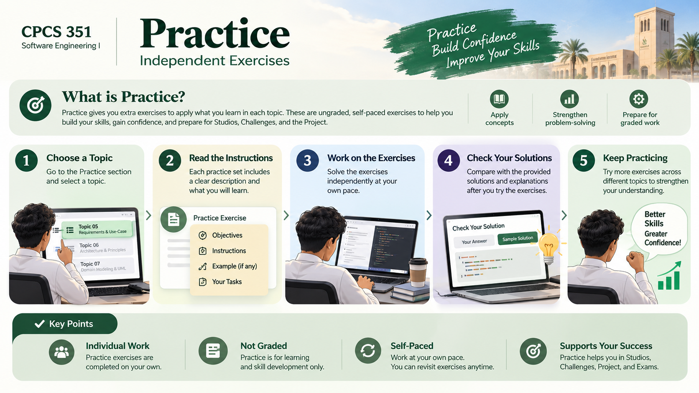

Practise in one place.
Independent exercises, self-checks and transfer tasks. No grades, no hidden submissions.

How Practice works
Ungraded work for strengthening understanding. Your practice attempts are separate from assessed Quick Checks.
Independent practice
Foundation exercises
Topic-by-topic attempts and feedback, separated from your reading.
Five practice questions
Make an attempt, read feedback and retry. Not the graded Quick Check.
CampusCare: independent judgment
Apply the foundations to a new situation and export your response.
Process, Agile & Team Workflow
Focused prompts and self-checks with direct links back to the corresponding concepts.
Requirements Foundations
Focused prompts and self-checks with direct links back to the corresponding concepts.
Stories, Use Cases & Traceability
Focused prompts and self-checks with direct links back to the corresponding concepts.
Modeling for Communication
Focused prompts and self-checks with direct links back to the corresponding concepts.
Design & Architecture Foundations
Focused prompts and self-checks with direct links back to the corresponding concepts.
Collaborative Software Construction
Focused prompts and self-checks with direct links back to the corresponding concepts.
Testing & Quality
Focused prompts and self-checks with direct links back to the corresponding concepts.
Secure, Responsible & AI-Assisted SE
Focused prompts and self-checks with direct links back to the corresponding concepts.
Integrated SE & Delivery
Focused prompts and self-checks with direct links back to the corresponding concepts.